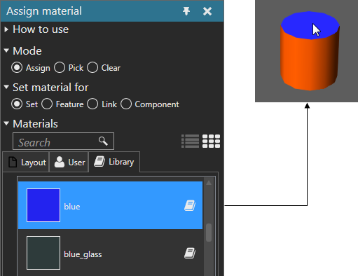

Assigning Material
You can assign a material to an object in the 3D world.
- On the Modeling tab, in the Geometry group, click the Tools arrow, and then under Material, click Assign.
- In the Assign material task pane, do all of the following:
- Expand Mode, and then select Assign.
- Expand Set material for, and then select a type of object.
- Expand Materials, and then find and select a material.
- In the 3D world, click an object to assign it the selected material.
Example. Assign material to face
